|
В. И. ЕЛИСЕЕВ ВВЕДЕНИЕ В МЕТОДЫ ТЕОРИИ
ФУНКЦИЙ ПРОСТРАНСТВЕННОГО КОМПЛЕКСНОГО ПЕРЕМЕННОГО |
|
3.1. Преобразования Лоренца
Преобразования Лоренца явились математическим фундаментом для развития основных принципов теории относительности. Скорость света в теории относительности является предельной скоростью распространения взаимодействий, а также возможно достижимой скоростью движения материи -
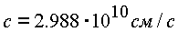
Из соображения "наглядности" в теории относительности пользуются воображаемым четырехмерным пространством, на осях которого откладываются три пространственные координаты х, у, и временная ct. Расстояние между двумя точками в таком пространстве
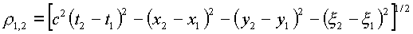
является интервалом между событиями 1 и 2.
Принцип относительности гласит: "интервал между двумя событиями во всех инерциальных системах отсчета одинаков". Воображаемое преобразование одной системы координат к другой математически выражается как вращение четырех мерной системы. Этот физический смысл пространства установлен в геометрии Миньковского [8].
Связь между старыми и новыми координатами в этой геометрии дается следующей матрицей, записанной в наиболее общем виде:
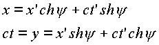
Где
y - угол поворота.При этом преобразовании соблюдается соответствие интервалов
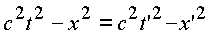
Покажем, что преобразования Миньковского вытекают из связи чисел во введенном комплексном пространстве Рассмотрим пока плоский случай, хотя это определение для пространства чисто условное. Умножим равенство с координатой х на вектор ij и сложим со вторым равенством
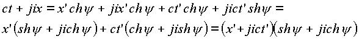
Произведем преобразования по правилам пространственной комплексной алгебры:
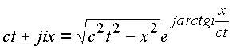;
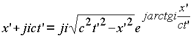;
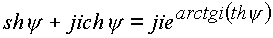.
В результате получим
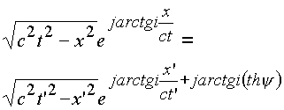.
Угол
y определяется через движение, центра инерции одной из систем K', x' = 0 относительно другой К.Тогда
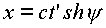, 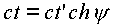.
Откуда 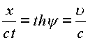
,и равенство приобретает вид
| 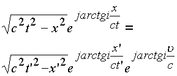 | (3.1.) |
В комплексном пространстве числа равны, если равны их модули и аргументы. Равенство модулей дает равенство интервалов в теории относительности
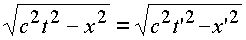.
Равенство аргументов дает выражение, которое преобразуйся к фундаментальному соотношению скоростей в теории относительности
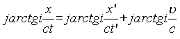,
но 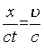в системе K,
а 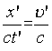в системе K',
Сумма arctg может быть записана в виде
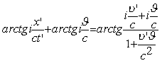
Приравнивая аргументы, получаем
| 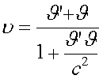 | (3.2.) |
Проведем дальнейшие исследования на базе аппарата пространственной комплексной алгебры. Координаты х, у,
x , t в теории относительности преобразуются по формулам: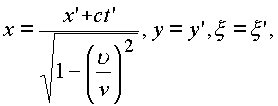.
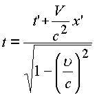.
Теория относительности утверждает, что
движение со скоростью света невозможно и
пространство делится световым конусом (рис. 39) на
две области и только там, где  действуют принципы этой теории.
действуют принципы этой теории.
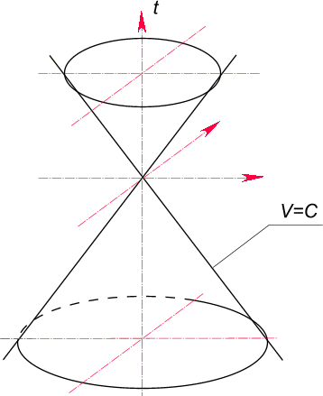
Рис. 39. Световой конус теории относительности, образованный множеством лучей, исходящих из нулевой точки начала координат. Световой конус делит физическое пространство на области, изолированные друг от друга
Если 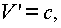то имеем из (3.2.) . Если, то
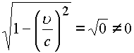
и координаты x, t в преобразованиях Лоренца превращаются в бесконечность. Поэтому движение со скоростью, равной скорости света, невозможно, утверждает теория относительности.
В комплексном пространстве  возможно и необходимо для
объяснения -туннеля
и конуса-фильтра дискретных точек. Световой
конус теории относительности - это конус-фильтр
делителей нуля, который собирается в -туннель по
временной координате (рис. 40).
возможно и необходимо для
объяснения -туннеля
и конуса-фильтра дискретных точек. Световой
конус теории относительности - это конус-фильтр
делителей нуля, который собирается в -туннель по
временной координате (рис. 40).
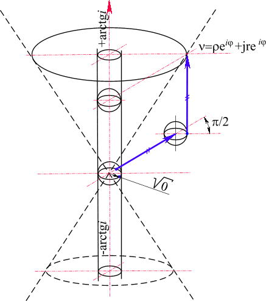
Рис. 40. Конус-фильтр делителей нуля эквивалентен световому конусу теории относительности. В сферических координатах конус-фильтр сворачивается в изолированную координатную ось
В этом случае (когда  равенство (3.1.) перейдет в равенство
делителей нуля
равенство (3.1.) перейдет в равенство
делителей нуля
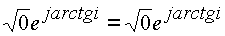.
Соотношение показывает: на световом конусе-фильтре интервалы обеих систем К, К' равны корню из нуля. Направление изолировано.
Выход из туннеля может произойти, когда
u станет меньше , а также когда , либо необходим дополнительный поворот составляющих скоростей на угол f , меньший p /2. Условие запрещено теорией относительности ввиду появления мнимых координат, комплексный пространственный анализ снимает это ограничение.Если центр инерции системы k движется с бесконечно большой скоростью 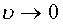, то преобразование координат происходит по формулам.
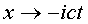,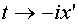
Этот результат соответствует физическому смыслу времени как координате в четырехмерном пространстве. Если центр инерции системы k достигнет бесконечно большой скорости, то его координаты повернутся на утол
p /2 относительно координат системы k'.Таким образом,
c - есть предельная скорость взаимодействия, но возможно не предельно достижимая скорость движения. Достигнув предельной скорости взаимодействия, системы образуют структуру более высокой размерности, в которой возможно имеется своя предельная скорость.Соотношение (3.2.) дает вывод, что если 
Мини оглавление:
[0], [1.1.1, 1.1.2, 1.1.3, 1.1.4, 1.1.5, 1.1.6, 1.1.7, 1.1.8, 1.2, 1.2.1, 1.2.2, 1.2.2.a, 1.2.2.b, 1.2.2.c, 1.2.2.d, 1.2.2.e, 1.2.2.f, 1.2.2.g, 1.2.2.h, 1.2.3, 1.3.1, 1.3.2, 1.3.3, 1.3.4, 1.3.5, 1.3.6, 1.4.1, 1.4.2, 1.5, 1.6, 1.7.1, 1.7.2, 1.7.3.1, 1.7.3.2, 1.7.3.3, 1.7.4.1, 1.7.4.2, 1.8.1], [2.1, 2.2],[3.1, 3.2, 3.3, 3.4.1, 3.4.2, 3.4.3, 3.4.4, 3.4.5],[4.1, 4.2, 4.3, 4.4],[5.1, 5.1.Рис.52, 5.2, 5.3, 5.4, 5.4.Т1, 5.4.Т2, 5.4.Т3, 5.5.1, 5.5.2, 5.5.3, 5.5.4],[6.1.1, 6.1.2, 6.2.1, 6.2.2, 6.2.3, 6.2.4, 6.2.5, 6.3, 6.4.1, 6.4.2, 6.5.1, 6.5.2],[7.1, 7.2, 7.3, 7.4, 7.5, 7.6, 7.7.1, 7.7.2, 7.8.1, 7.8.2, 7.8.3, 7.9],[8.1, 8.2.1, 8.2.2, 8.3, 8.4, 8.5, 8.6, 8.6.T1, 8.7, 8.8.1, 8.8.2, 8.8.3, 8.9.1, 8.9.2, 8.9.3, 8.10, 8.10.T2, 8.10.T3],[9.1, 9.2, 9.3, Рис.88, 89, 90, 91, 92, 93, 94, 95, 96, 97, 98, 99, 100],[10.1, 10.2, 10.3, 10.4, 10.5, 10.6, 10.7, 10.8, 10.9, 10.10, 10.11, 10.12, 10.13, 10.14, 10.15.1, 10.15.2, 10.16.1, 10.16.2, 10.17, 10.18],[11]
Размещенный материал является электронной версией книги: © В.И.Елисеев, "Введение в методы теории функций пространственного комплексного переменного", изданной Центром научно-технического творчества молодежи Алгоритм. - М.:, НИАТ. - 1990. Шифр Д7-90/83308. в каталоге Государственной публичной научно-технической библиотеки. Сайт действует с 10 августа 1998.
E-mail: mathsru@gmail.com